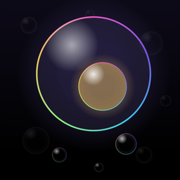

Bubble Thoughts support
Answers to common questions, and how to reach us
Contact us
Email jengaworx@gmail.com. It helps to mention your iPhone model and iOS version. We usually reply within a few days.
Common questions
How do I add a bubble?
On the Today screen, press and hold anywhere. Hold longer for a stronger feeling, then pick a colour on the ring. Tap Aa on the ring if you want to add a few words first.
Where are my bubbles stored?
Only on your iPhone. There is no account and no cloud, so nobody else, including us, can see them. See the privacy policy.
How do I move my bubbles to a new iPhone?
Your bubbles move with the rest of your iPhone when you restore from an iCloud or computer backup, or when you transfer directly from your old iPhone during setup. An export option is planned for a future update.
How do I restore Bubble Thoughts Plus?
Open the ••• menu, go to Settings and tap Restore purchase. Make sure you are signed in with the same Apple Account you used to buy Plus.
How do I ask for a refund?
Purchases are handled by Apple, so refunds are requested from Apple at reportaproblem.apple.com.
How do I lock the app with Face ID?
Open the ••• menu, go to Settings and turn on Lock with Face ID under Privacy. The app then asks for Face ID or your passcode whenever it opens.
My reminders don’t arrive
Check that reminders are on in the app’s Settings, and that notifications are allowed in your iPhone’s Settings › Notifications › Bubble Thoughts. Focus modes can also hold notifications back.
How do I add a widget?
Touch and hold an empty spot on your Home Screen or Lock Screen, tap Edit, then Add Widget, and choose Bubble Thoughts.
The bubbles move too much for me
Tap the round pause button next to the Timeline tab to hold the bubbles still (it also pauses the background music). You can also slow them down in Settings › Movement. If you turn on Reduce Motion in your iPhone’s Settings › Accessibility › Motion, the app moves more calmly everywhere.
How do I remove the example bubbles?
Open Settings and tap Clear sample thoughts. Your own bubbles are not touched.
Need to talk to someone?
Bubble Thoughts is a wellbeing tool, not a medical device, and it can’t respond in an emergency. If you might hurt yourself or someone else, call your local emergency number now.
These free helplines are there day and night:
| South Africa | SADAG Suicide Crisis Helpline: 0800 567 567 |
| United States | 988 Suicide & Crisis Lifeline: call or text 988 |
| UK and Ireland | Samaritans: 116 123 |
| Everywhere else | findahelpline.com |